An application program is a computer program which is designed to perform a group of tasks, functions, or performances in order to benefit the user
American Standard Code for Information Interchange is the most common format for text files Each alphabetic, numeric, or special character is represented with a 7-bit binary number
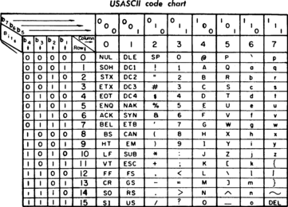A coding system using the binary digits 0 and 1 to represent a digit, letter, or specialized characters
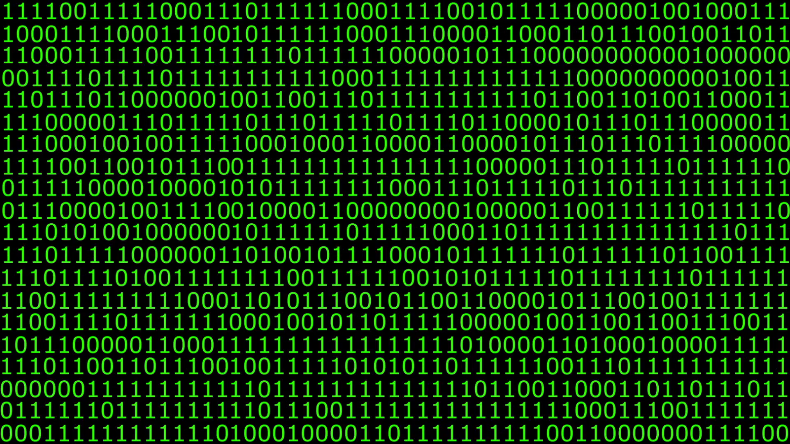A bit is the smallest possible unit a computer can register, which has the value of either 0 or 1 which represents it’s binary value
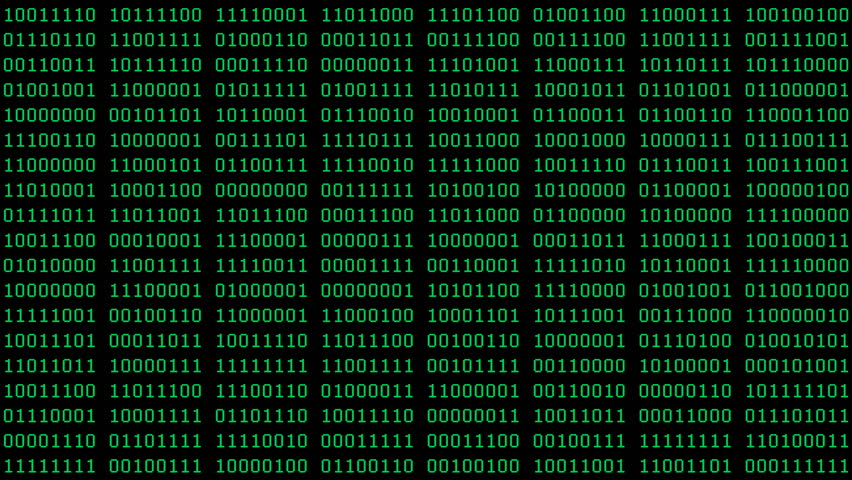The sequence/set of operations which occurs when any operating system is turned on
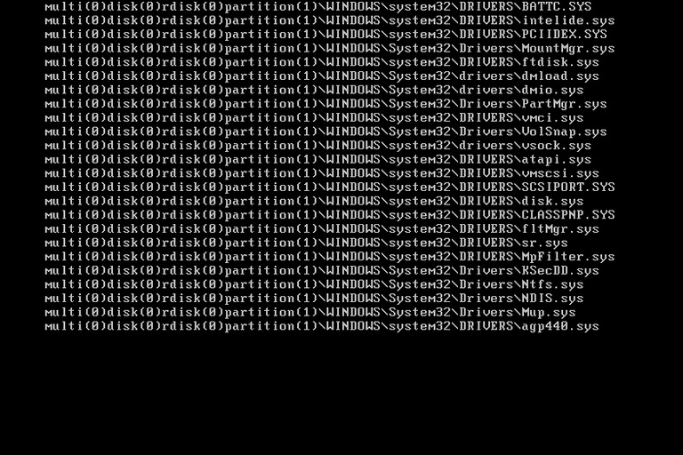A group of Binary digits or bits (usually 8) that work as a unit to create something

Any characters, symbols, numbers, spacing, punctuation marks and/or symbols that can be created using a keyboard
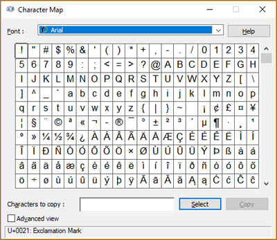An electronic device that stores and processes data, it usually uses Binary form
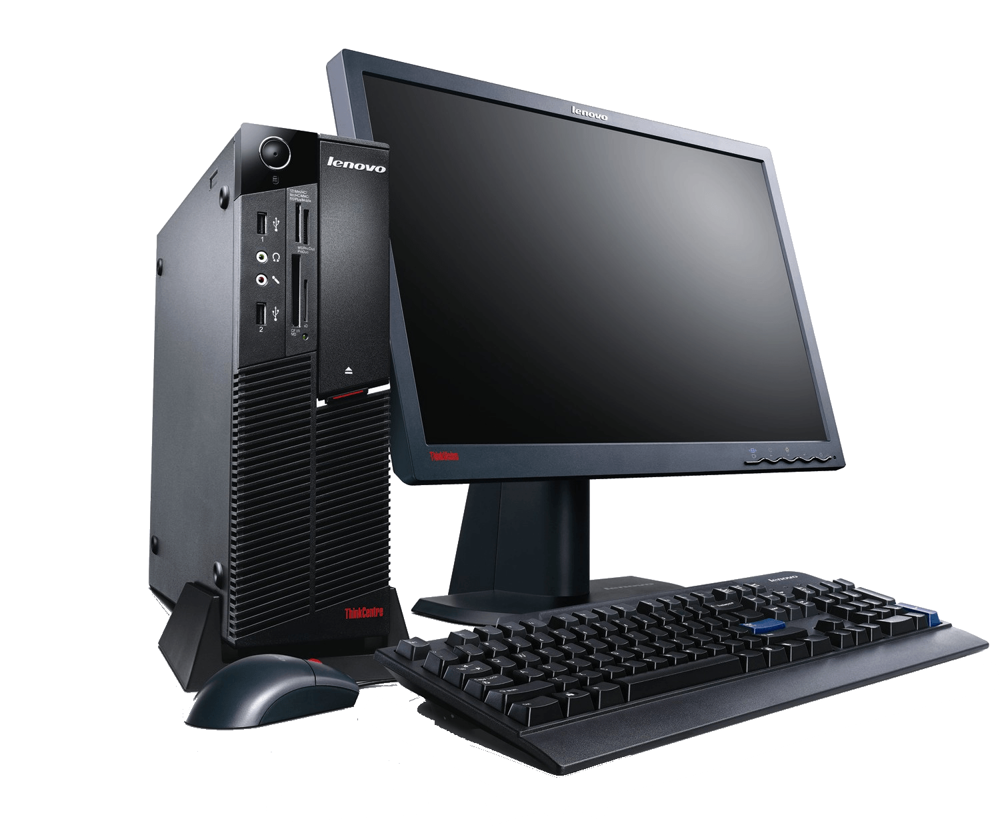An abbreviation for central processing unit, commonly called central processor This is a component is necessary for a operating unit to function
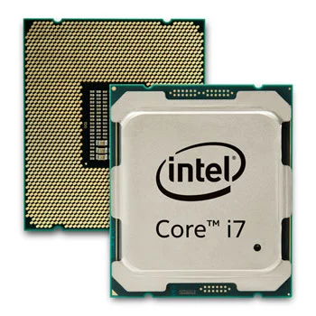A directory is a filing system which contains references to other computing files

A collection of data or information stored on the computer that uses memory
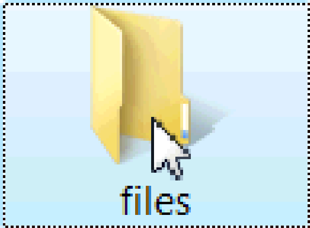Technology that allows high-speed communication and data exchange between two computers or a computer and a peripheral
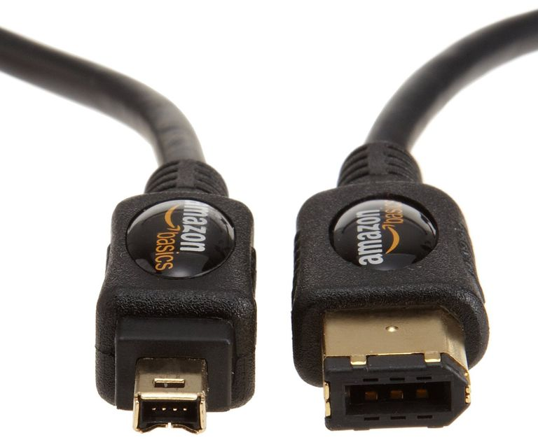A gigabyte (GB) is a measure of computer data storage capacity which is equal to 1 billion bytes
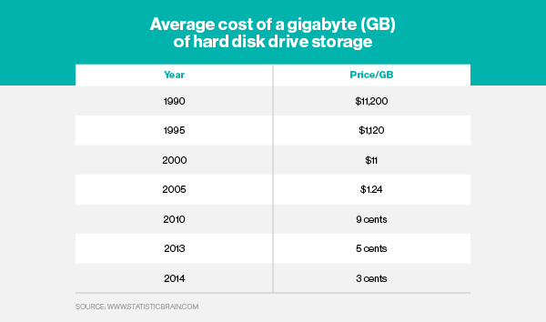The physical parts of a computer system Examples include; computer cases, monitor, keyboard, and mouse
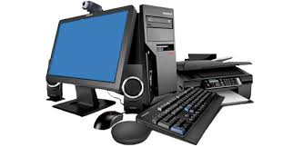Generally referred to as data
Devices that give an input command for the computer to process (mouse or keyboard
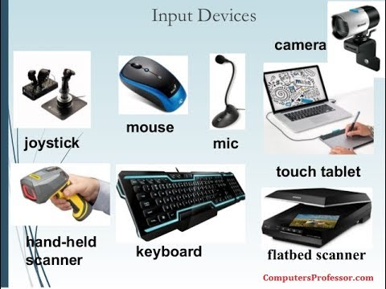A unit, as an abbreviation (kb), 1 Kilobyte is equal to 1000 bytes
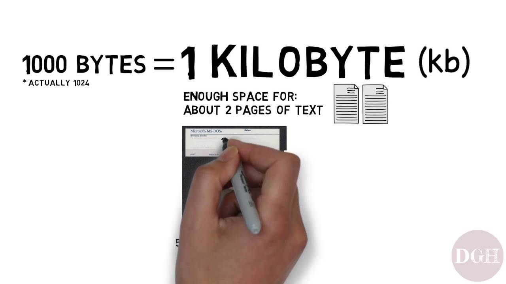A unit of information using the abbreviations (Mb) 1 Megabyte is equal to 1 000 000 bytes
A device is used to output information with the usage of lights in pictorial form

The software responsible for a computer’s basic functions, such as; scheduling tasks, executing applications, and controlling peripherals

Any devices which are used to sent information data from another device Some examples include projectors, monitors, headphones, printers, etc
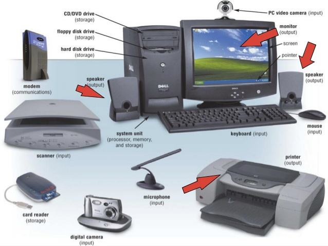A computer peripheral is any external device that provides input and output for the computer
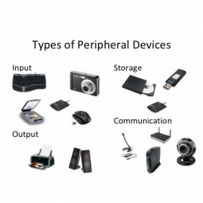A unit in the computer where data is stored for quick access storaThe abbreviation “Random Access Memory” (RAM) are often referred to as synonyms to primary or main storage
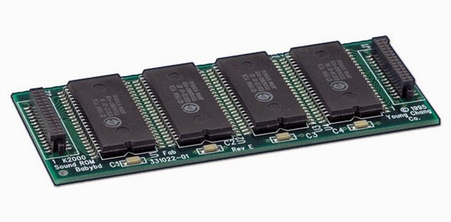It takes any input and turns it into output An example is if somebody moves the mouse (input) the mouse/ cursor will move on the screen (output)
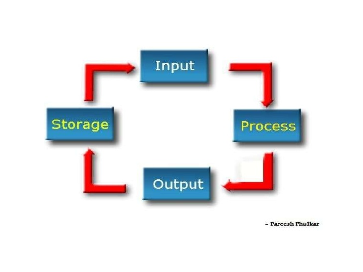Able to be provided with coded instructions for the automatic performance of a task
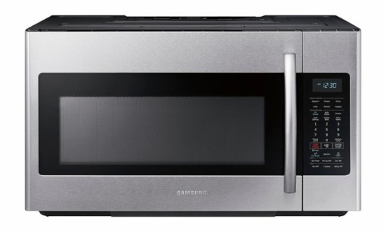Provides a computer with coded instructions for the computer to perform a particular task
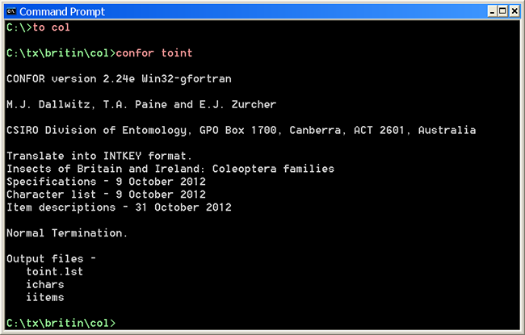RAM also known as “random access memory” is a type of computer memory that can be accessed randomly It is found in; servers, tablets, smartphones and other devices, such as printers
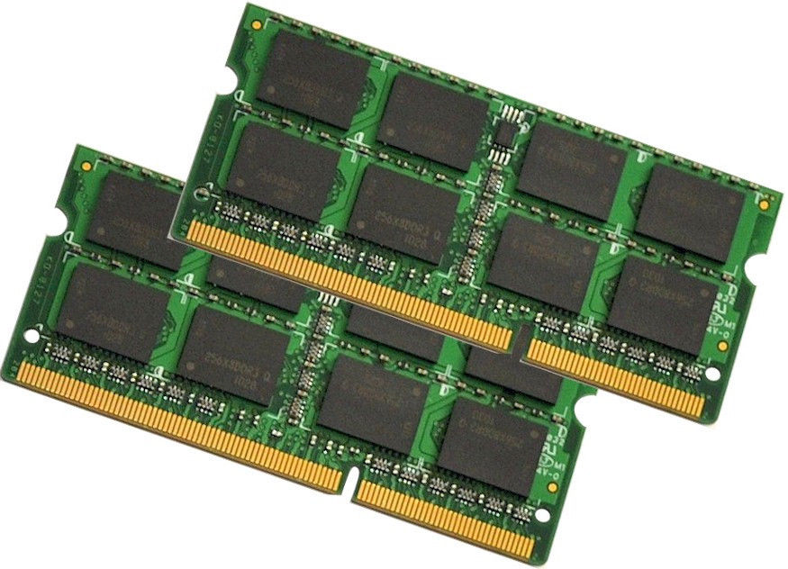Read only Memory, it is computer memory of data that has been prerecorded
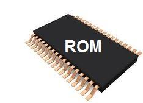Root commonly refers to the superior directory of a file system For instance, on a Windows-based PC, “C:\” represents the root directory of the C drive
Secondary storage is known as external memory which the computer usually uses its input/output channels to access secondary storage and transfers the desired data using intermediate area in primary storage
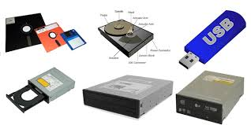The programs and other operating information used by a computer
Sequence of characters Examples include; numbers, symbols, or punctuation marks
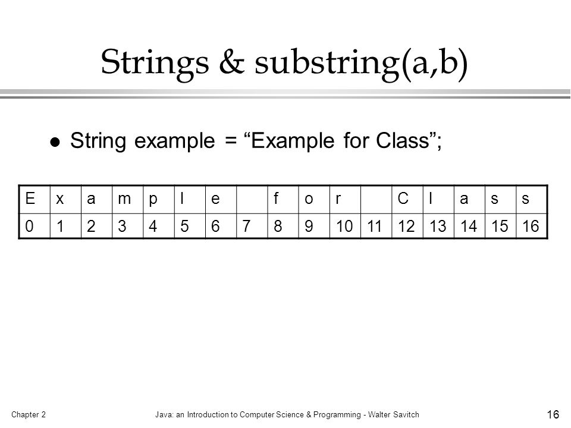A system unit is the part of a computer that houses the primary devices that perform operations and produce results for complex calculations
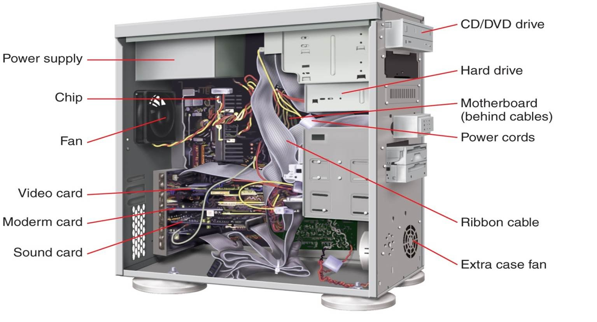USB referred to as a Universal Serial Bus is used to enable communication between devices
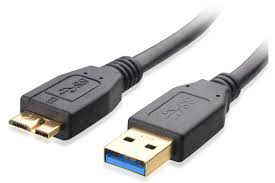